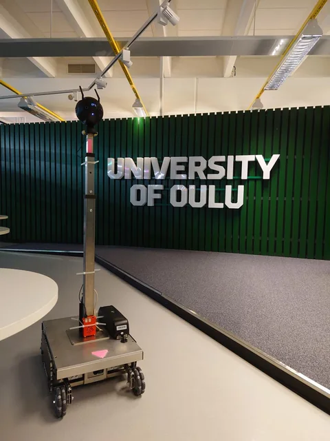
Immersive robotic telepresence
Connecting remote spaces through robotics and immersive video.
A collection of research, engineering, and design work. Explore the systems, the process, and the details behind each project.
25 projects

Connecting remote spaces through robotics and immersive video.
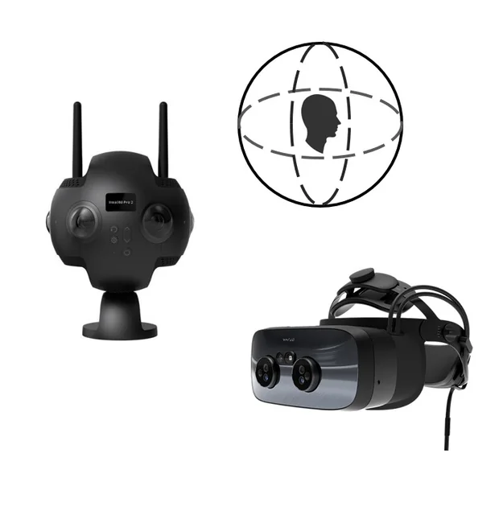
High-resolution immersive rendering across VR and XR headsets.
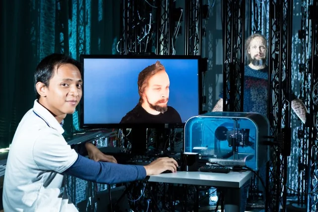
Turning captured subjects into usable assets for virtual environments.
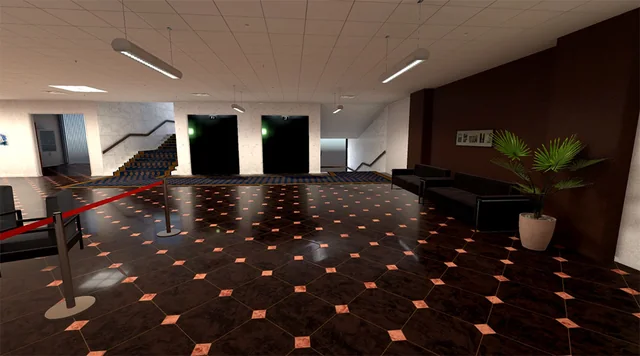
A detailed virtual campus built for immersive research.
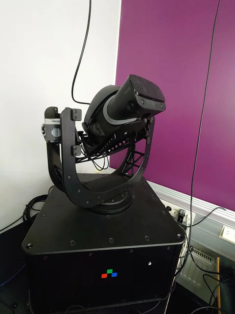
Using a robot platform to evaluate headset performance.
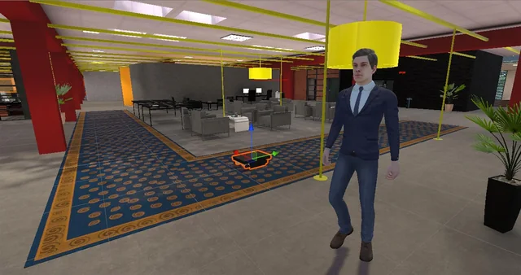
A virtual test environment for robot navigation and user comfort.
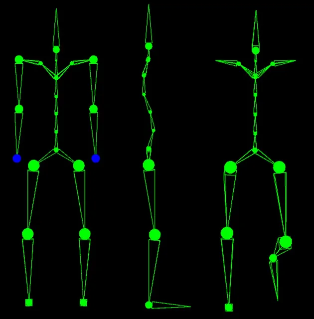
A modular sensing system for reconstructing human movement.
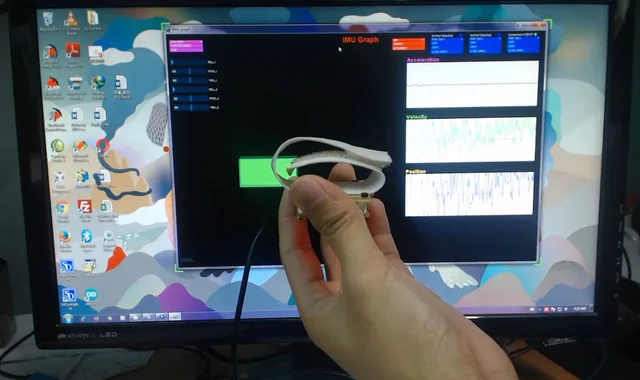
Evaluating filtering methods for wearable orientation tracking.
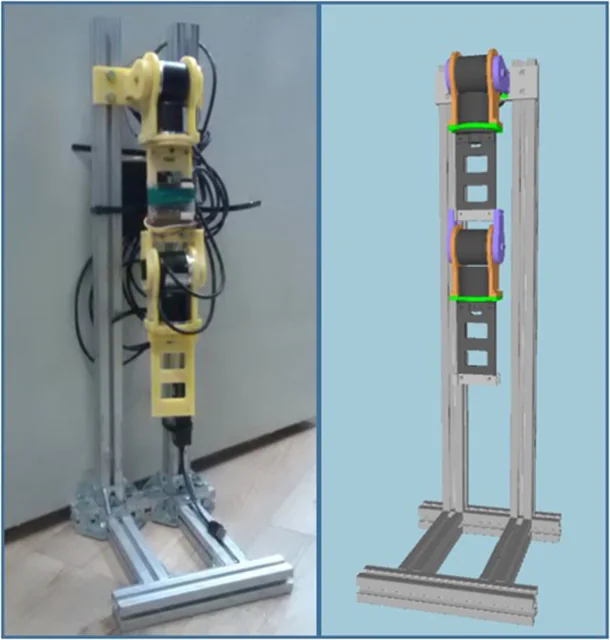
Comparing inertial tracking with encoder and optical measurements.
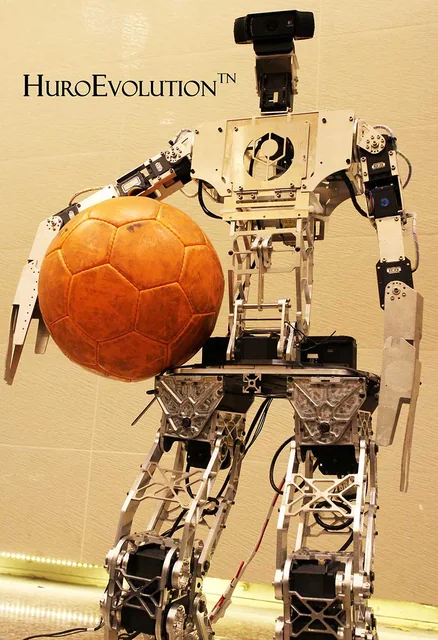
A competition robot bringing mechanics, perception, and control together.
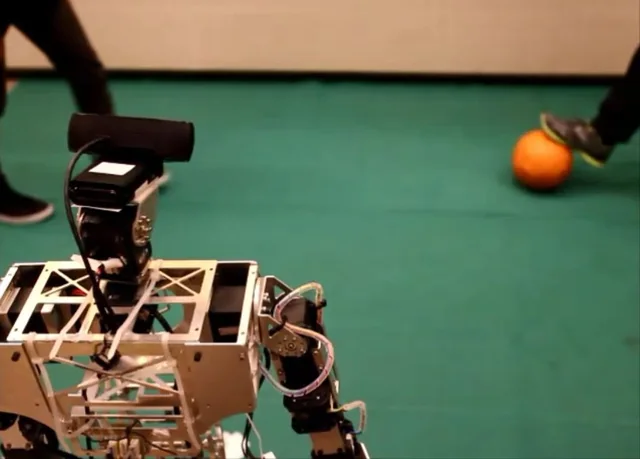
Tracking the ball and interpreting the field while the robot moves.
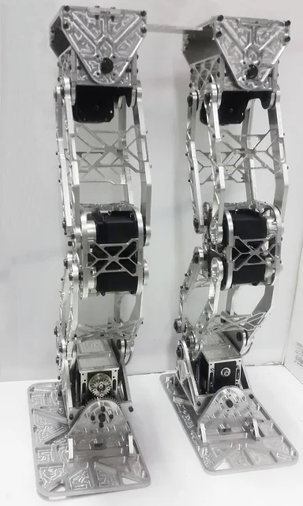
A lightweight biped structure with parallel leg mechanisms.
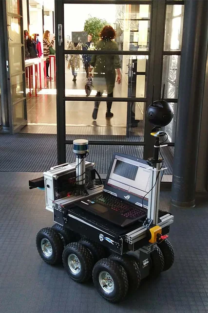
Panoramic footage for robotic and immersive telepresence studies.
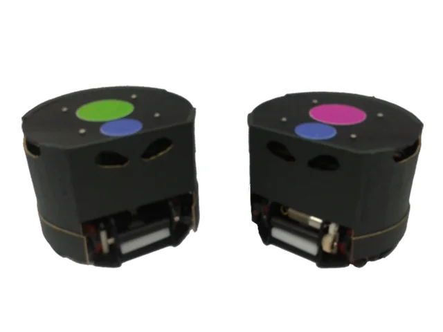
Coordinating two robots through a shared view of the field.
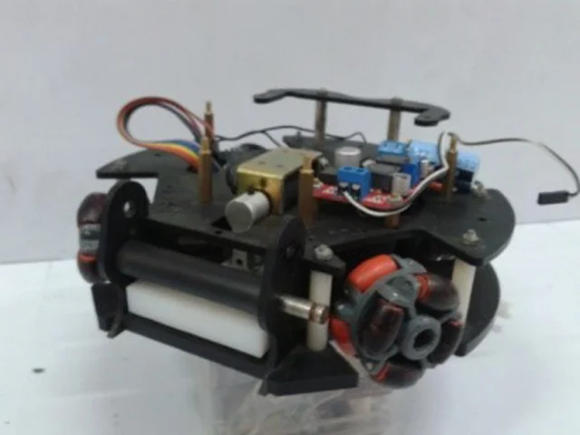
Compact soccer robots refined through three mechanical iterations.
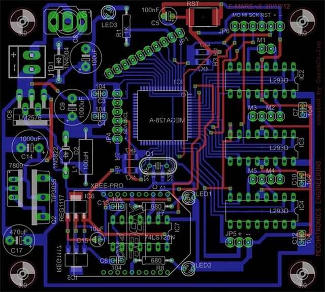
Custom control boards connecting the robot’s power, sensing, and motion.
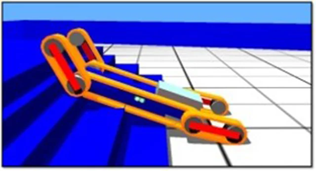
Exploring robot mobility across stairs and uneven terrain.
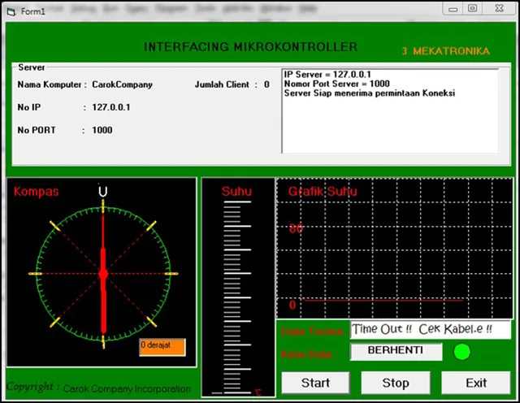
Remote control and live sensor monitoring through a client’server interface.
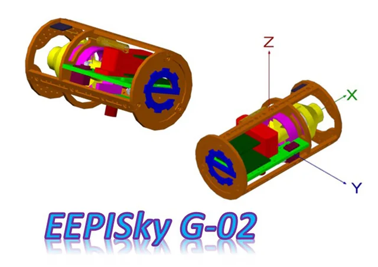
An instrumented payload for atmospheric measurements and aerial imagery.
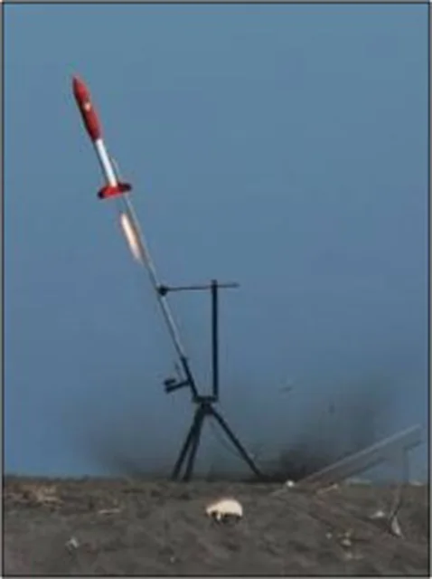
A meteorology payload for the 2010 national rocket competition.
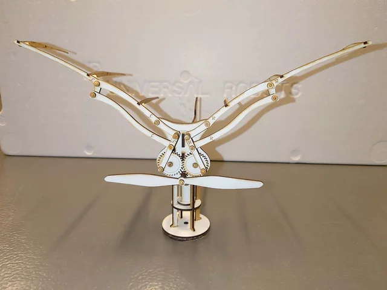
A wind-driven mechanism that turns rotation into flapping movement.
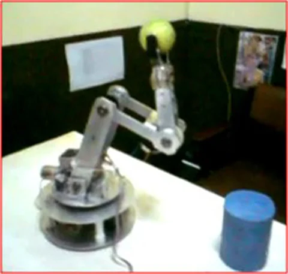
Designing and building a pick-and-place arm with conventional tools.
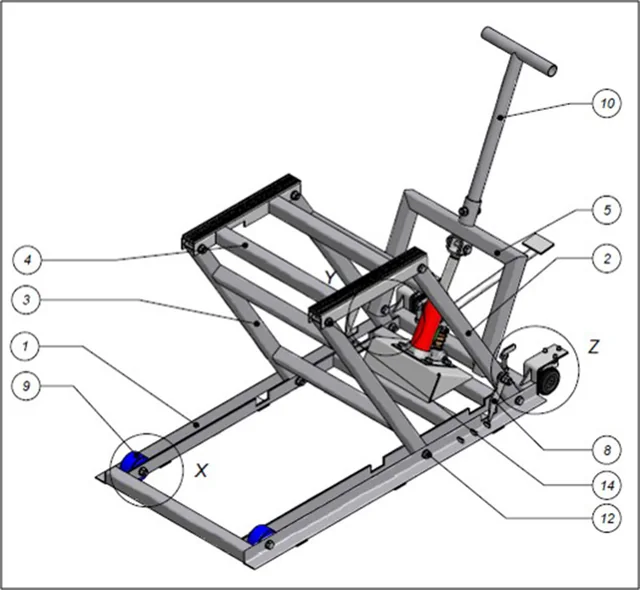
A workshop lift designed for easier motorcycle maintenance.
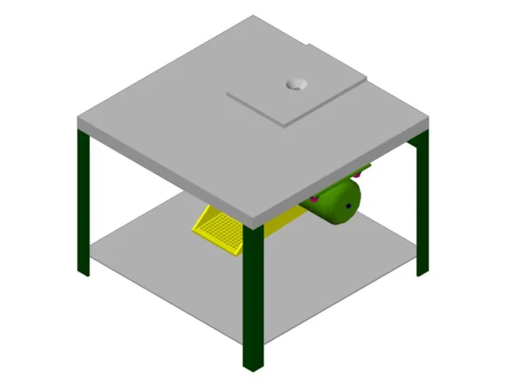
A production machine designed to recover material from rejected products.
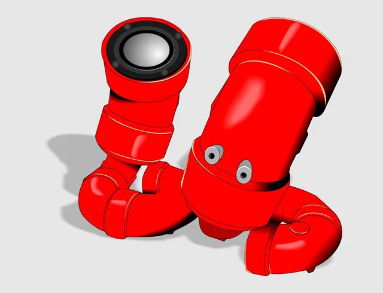
Personal experiments in physical form and visual communication.
No projects match. Try another search or choose “All work”.
Let’s talk about robotics, immersive technology, and the work ahead.